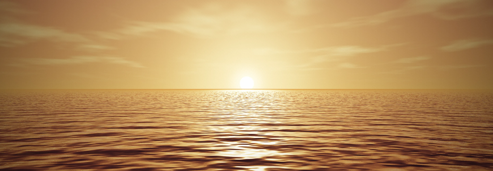
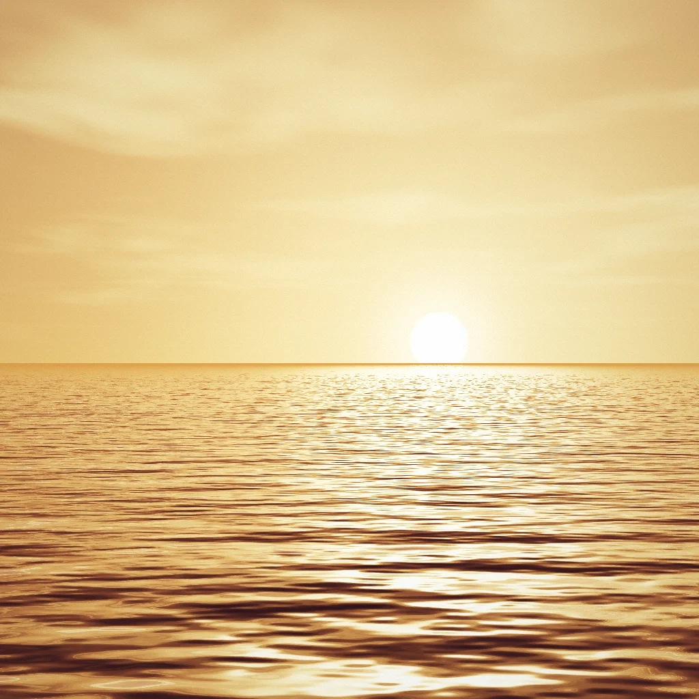

Viagem ao litoral
1 a 24 de outubro · 24 fotos · 3 lugares
Imagens renderizadas por código (WebGL próprio), sem foto real

1 a 24 de outubro · 24 fotos · 3 lugares
Imagens renderizadas por código (WebGL próprio), sem foto real
